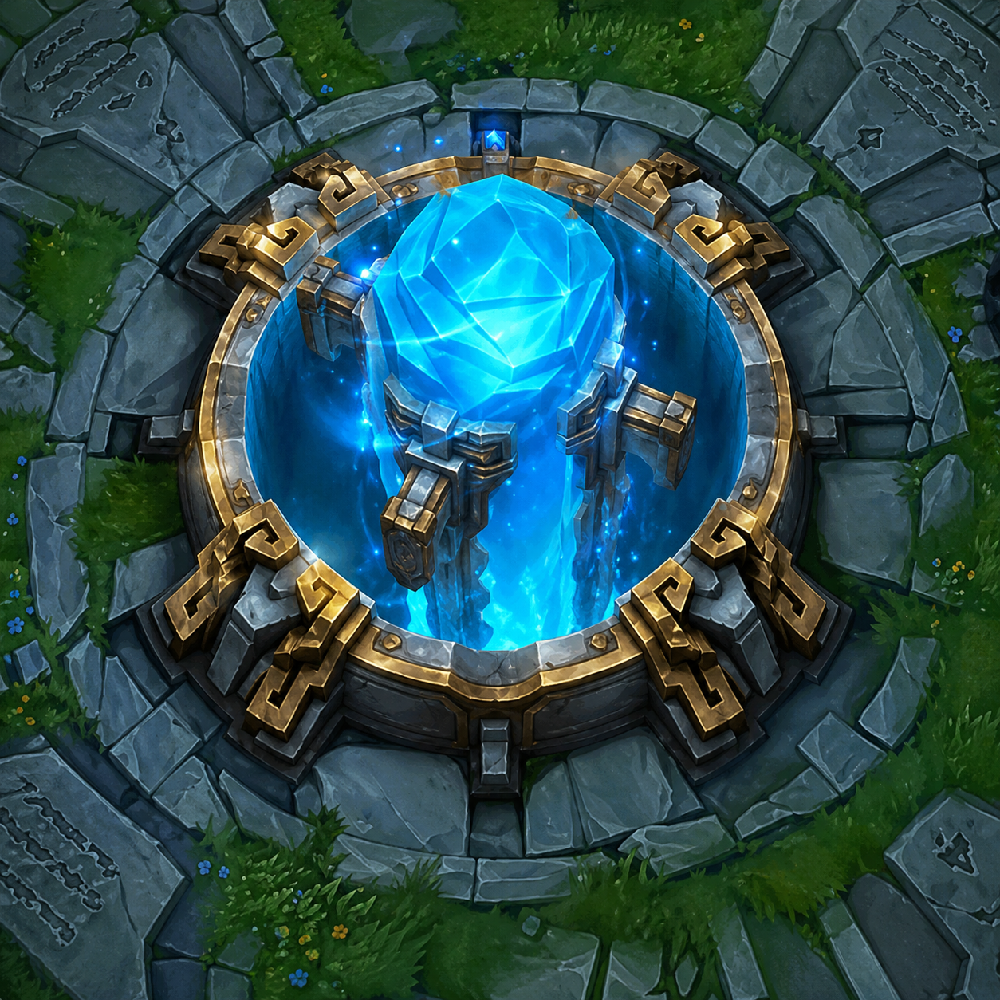
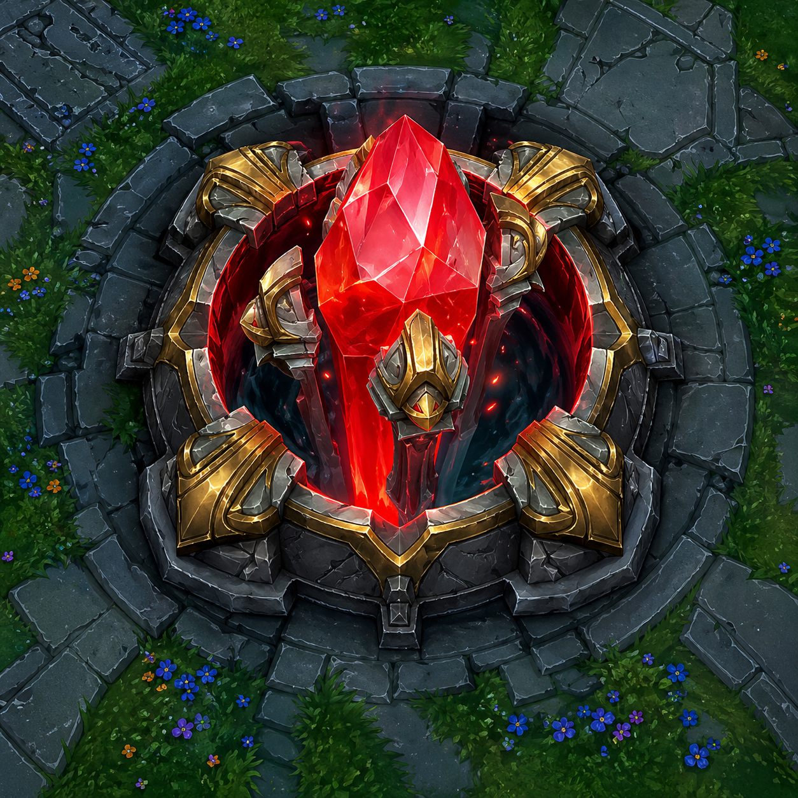
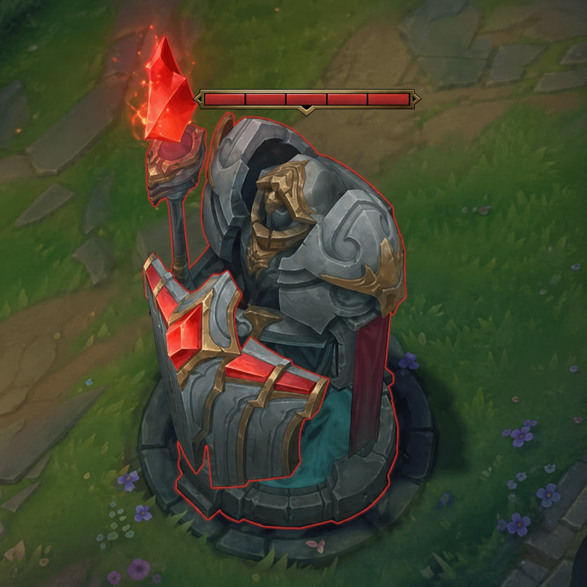
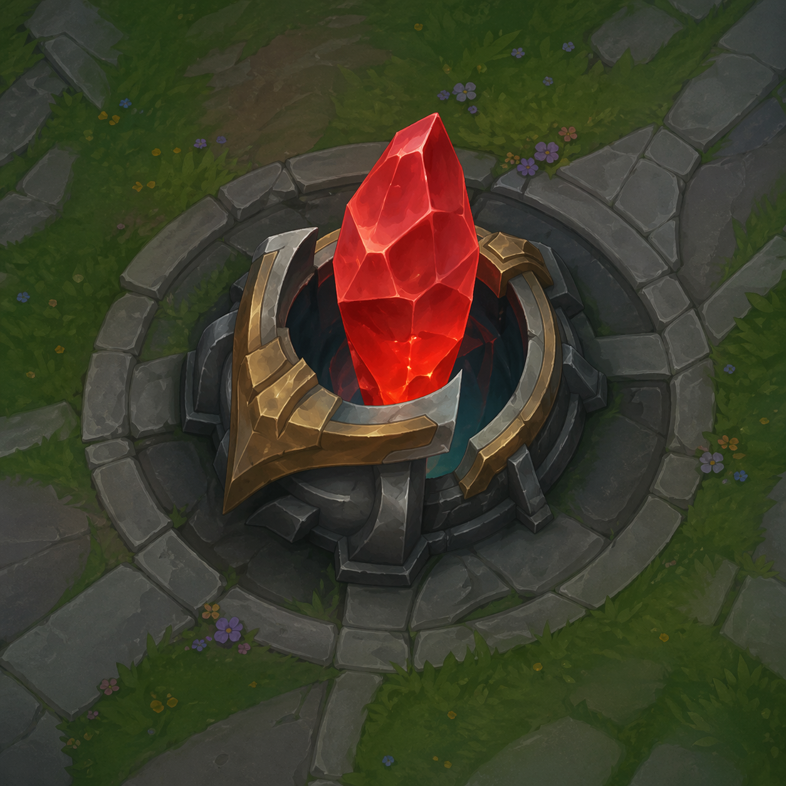
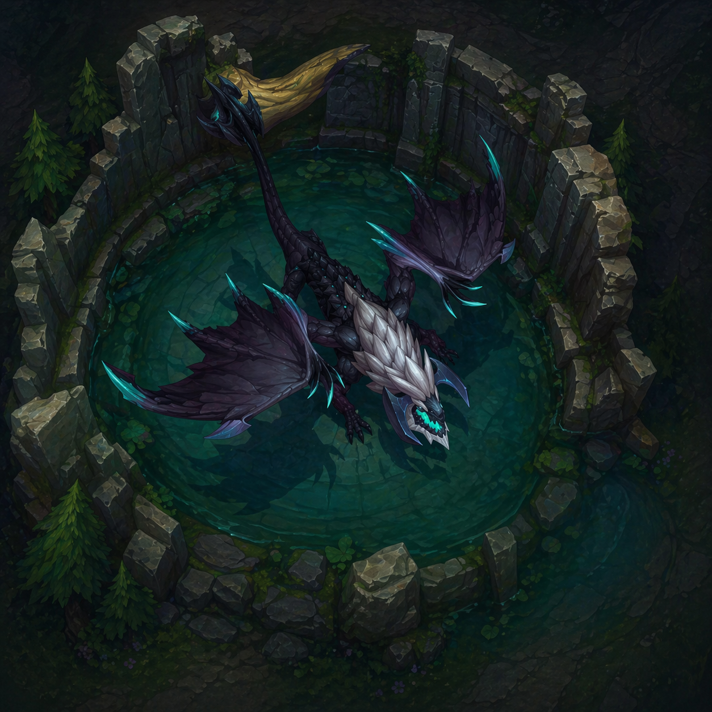
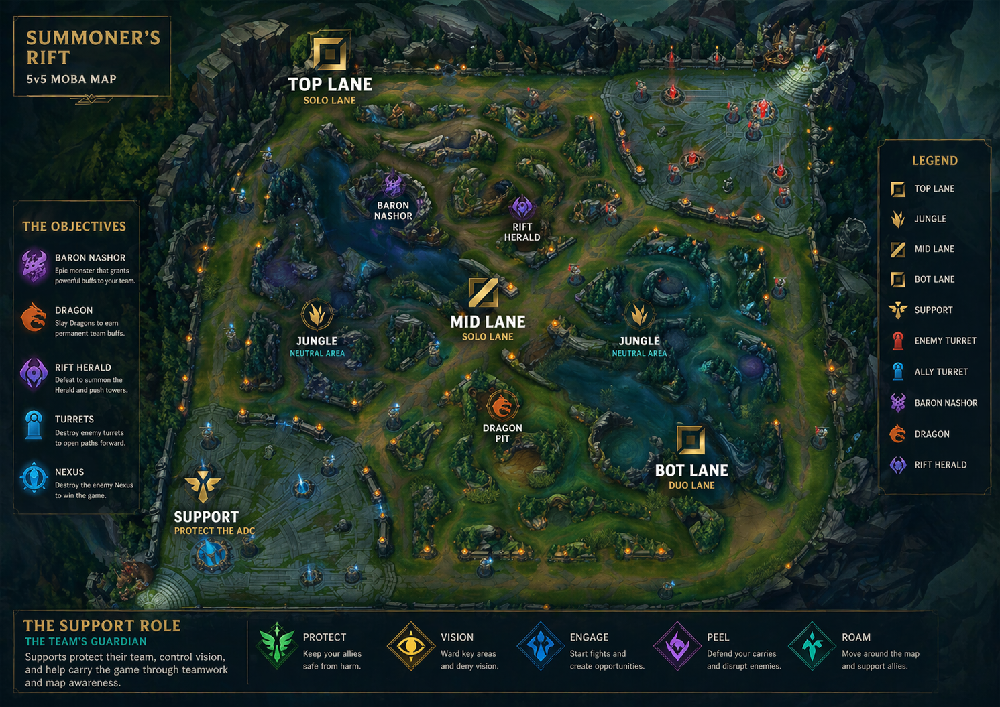
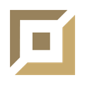
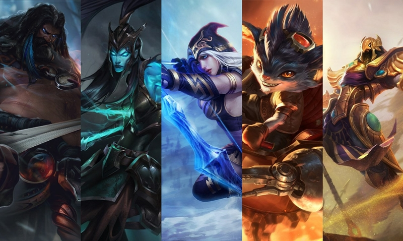

LEGENDS OF LEAGUE
Legends of League — A 5v5 MOBA where teams battle to destroy the enemy Nexus
WELCOME TO THE RIFT
LEARN THE BASICS
There’s a lot to learn about League, so we’ll start with the essentials. Explore the guide below to get the rundown on the most popular game mode.
DESTROY THE BASE
The Nexus is the heart of both teams’ bases. Destroy the enemy’s Nexus first to win the game.

YOUR NEXUS
Your Nexus is where minions spawn. Behind your Nexus is the Fountain, where you can quickly replenish health and mana and access the Shop.

ENEMY NEXUS
The enemy Nexus is located on the opposite side of the map. Destroy the enemy Nexus to win the game.

TURRETS
Turrets deal damage to enemy minions and champions, and provide limited vision from the Fog of War for their team. Attack these structures with minions ahead of you to avoid damage and charge ahead.

INHIBITORS
Each Inhibitor is protected by a Turret. When destroyed, super minions will spawn in that lane for several minutes. Afterward, the Inhibitor will respawn and Super Minions will stop spawning.
CLEAR THE PATH
Your team needs to clear at least one lane to get to the enemy Nexus. Blocking your path are defense structures called turrets and inhibitors. Each lane has three turrets and one inhibitor, and each Nexus is guarded by two turrets.
TAKE ON THE JUNGLE
In between the lanes is the jungle, where neutral monsters and jungle plants reside. The two most important monsters are Baron Nashor and the Drakes. Killing these units grants unique buffs for your team and can also turn the tide of the game.

DRAKES
Drakes, or dragons, are powerful monsters that grant unique bonuses depending on the element of the drake your team slays. There are five Elemental Drakes and one Elder Dragon.
CHOOSE YOUR LANE
There are five positions that make up the recommended team comp for the game. Each lane lends itself to certain kinds of champions and roles—try them all or lock in to the lane that calls you.

TOP LANE
Champions in top lane are the tough solo fighters of the team. It’s their job to protect their lane and focus on the enemy team’s most powerful members.

JUNGLE
Junglers live for the hunt. Stalking between lanes with stealth and skill, they keep a close eye on the most important neutral monsters and pounce the moment an opponent lets their guard down.
MID LANE
Mid laners are your high burst damage champions who can do it all—solo and as a team. For them, combat is a dangerous dance where they’re always looking for an opportunity to outplay their opponent.

BOT LANE
Bot lane champions are the dynamite of the team. As precious cargo, they need to be protected early on before amassing enough gold and experience to carry the team to victory.

SUPPORT
Support champions are team guardians. They help keep teammates alive and primarily focus on setting up kills, protecting their teammate in bot lane until they become stronger.

MEET THE CHAMPIONS
With more than 170 champions, you’ll find the perfect match for your playstyle. Master one, or master them all.
OVERVIEW
Legends of League is a fast-paced, strategic 5v5 multiplayer online battle arena (MOBA) game where players control powerful champions, each with unique abilities, to compete against one another. In this exciting game, players must work together as a team to take down the enemy's Nexus, the core structure of their base. Each match requires a blend of tactical decision-making, strategic positioning, and quick reflexes.
Explore various roles such as fighters, mages, marksmen, and supports, each with its own strengths and weaknesses. Whether you're battling it out in the lanes or taking control of the jungle, every decision counts. Work with your team, strategize, and become the champion of the Rift!